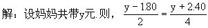

习题十解答
1.思路1：
解：设每米布x元.则2x+1.80=4x-2.40，
解出x=2.10。
2.10×2+1.80=6（元）
答：妈妈带了6元钱。
思路2：

解出y=6
答：妈妈带了6元钱。
2.解：设第二车间原有x人，则第一车间原有3x人。
3x-20=x+20，
x=20。
3x=20×3=60，
答：第一车间原有60人，第二车间原有20人。
3.提示：根据甲池注进4吨，乙池放出8吨，甲池水的吨数与乙池水的吨数相等，得出甲+4=乙-8，所以甲池水=乙池水-12。
解：设乙池水原有x吨，则甲池水原有（x-12）吨。
x+x-12=40，
x=26，
x-12＝26-12＝14。
答：甲池水原有14吨，乙池水原有26吨.
4.解：设x天后两堆煤剩下的相等。
4.5-0.36x＝6-0.51x，
x＝10。
答：10天后两堆煤剩下吨数相等。
5.提示：依题意得出小龙的球的个数-2=小虎的球的个数+2=小方的球的个数×2=小圆的球的个数÷2=x
解：设四个人的球数在变动后的个数为x。
x＝10。
小龙：x+2=10+2=12，
小虎：x-2＝10-2＝8，
小方：x÷2＝10÷2=5，
小圆：2x＝10×2=20。
答：小龙、小虎、小方、小圆原有球的个数依次为12个、8个、5个和20个。
6.解：设甲种轿车每辆乘坐x人，乙种轿车每辆乘坐y人。
5（3x+4y）＝4（5x＋3y），
5x＝8y，
的乘客多.